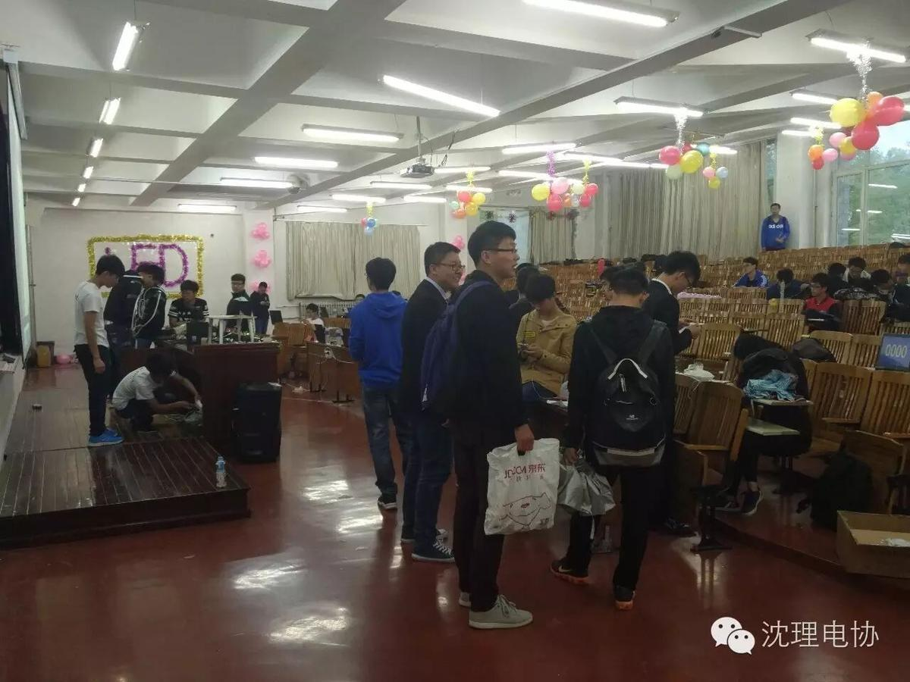
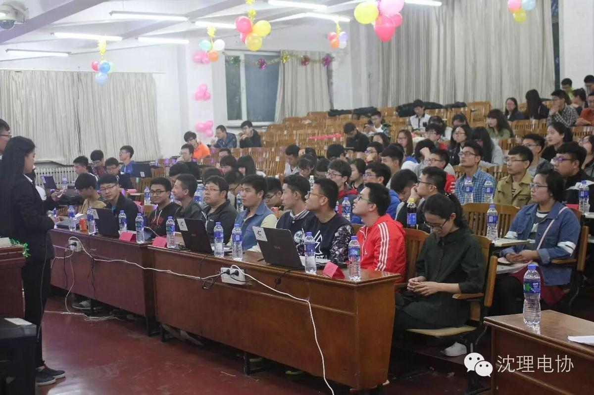

LED大赛圆满落幕!

首先呢，小编认为LED大赛的成功举办绝大部分的功劳应该归功于电协的干事，大家在百忙之中挤出时间来布置如此别样，精彩的会场，所以，小编在这里代大家谢谢电协的所有干事，真的非常感谢！

昨天小编就说今晚会有重量级嘉宾到场，但是令小编也没有想到的是嘉宾的分量如此之重，有老师，还有电协历届的会长，副会长，现任会长以及其他协会的会长，副会长，实在是令小编都是无法形容！阵容真是空前绝后啊
说了这么多，大家想必是想要欣赏作品了！先给大家上波图！！！
比赛的时候小编是在现场的，那种即视感，真的无法形容，不知道小伙伴们有没有被这些参赛的大神们的作品震撼到呢！反正小编是很惊讶！！！！
经过一个多小时的作品介绍以及作品展示，小伙伴们也是有了自己的名次！
让我们来看看这些获奖的小伙伴们究竟是谁，并给他们送上祝贺！！！！
看着大家获奖后开心，满意的笑容，小编也着实为大家感到十分的高兴！
有人问我怎么决定的名次，看来小编要给大家讲一下评分规则了！！！
总之，电子协会这次的LED举办的非常成功，非常感谢老师以及诸位学长学姐的到来！十分感谢！！！

信息部\张晋鹏